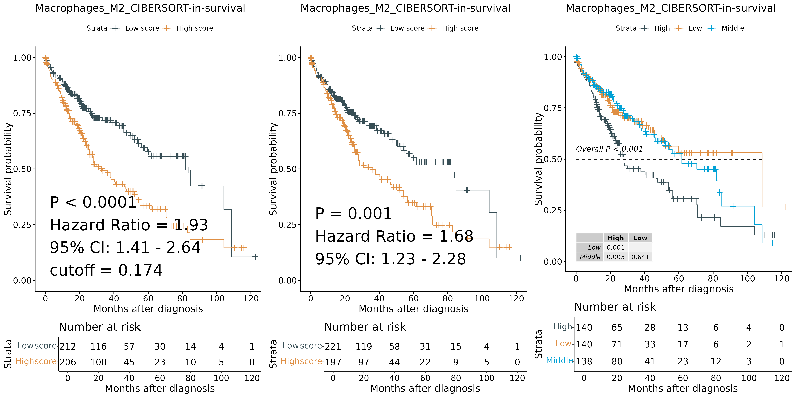

生存分析模块
用途
本模块基于IOBR、survival、survminer等R包，对免疫浸润/基因集打分结果与生存信息进行单因素生存分析，并输出标准化的生存曲线图。
输入文件示例
input特征打分/免疫浸润结果文件：每行一个样本名，每列为各类免疫细胞/基因集打分等特征，tab分割
SampleID
Macrophages_M2_CIBERSORT
CD8_T_Cells_EPIC
Sample1
0.123
0.456
Sample2
0.234
0.567
Sample3
0.345
0.678
clinical生存信息文件：每行一个样本名，每列为生存时间、生存状态等特征，tab分割
SampleID
OS.time
OS
DFS.time
DFS
Sample1
1000
1
800
0
Sample2
800
0
600
0
Sample3
1200
1
1000
1
运行方式
SDAS bulkValidate survivalKM --input tme_combine.txt --clinical survival.txt --signature Macrophages_M2_CIBERSORT --project_name survival --time OS.time --status OS.status --time_type day --output survival_output
输入参数说明
参数
必需
默认值
描述
--input 是 免疫浸润/打分结果文件路径
--clinical 是 生存信息文件路径
--signature 是 用于生存分析的特征列名
--output 是 输出目录路径
--project_name
否
test
项目名称（用于输出文件命名等）
--time
否
OS.time
生存时间列名
--status
否
OS.status
生存状态列名（0=生存/无复发，1=死亡/复发）
--time_type
否
day
时间单位，默认day
输出结果展示
结果文件
描述
survival.png/pdf生存曲线图
生存曲线图: survival.png/pdf展示指定特征分组下的生存分析曲线，显示高低组生存差异。

分组方法的区别：
最佳截断值（best cutoff）分组：通过统计方法寻找将两组生存差异最大化的截断值。通常能最显著地区分出高风险组和低风险组（如左图所示）。
平均数分组： 以所有样本得分的平均数作为分界点。这种方法在数据分布对称时效果较好，但在偏态分布时可能不够敏感（如中图所示）。
三等分组： 将样本按照得分分为三等分（低、中、高）。这种方法高低分组的差异可能不如前两种方法显著（如右图所示），但能避免极端值影响，并观察中间组的影响。
统计指标的含义：
P值： 表示组间生存差异的显著性。P值越小，表明组间差异越不可能由随机因素导致。
Hazard Ratio（风险比，HR）： 表示高分组相对于低分组的死亡风险倍数。HR>1表示高风险
95% CI（置信区间）： 表示HR的95%置信区间，反映估计的精确度。区间不包含1（如左图1.41-2.64）表示HR显著不等于1。区间越窄，估计越精确。
Cutoff值：最佳截断值分组方法中使用的分界点。
生存曲线：展示了高分组（橙色）和低分组（蓝色）的生存概率随时间变化情况。曲线分离越明显，组间差异越大。
风险表（Number at risk）： 在时间点下方显示各组的风险人数（即到该时间点还未发生终点事件的人数），这有助于评估随着时间的推移各组的样本数量变化。
参考文献
Zeng, D., Ye, Z., Shen, R., Yu, G., Wu, J., Xiong, Y., ... & Liao, W. (2021). IOBR: multi-omics immuno-oncology biological research to decode tumor microenvironment and signatures. Frontiers in immunology , 12 , 687975.